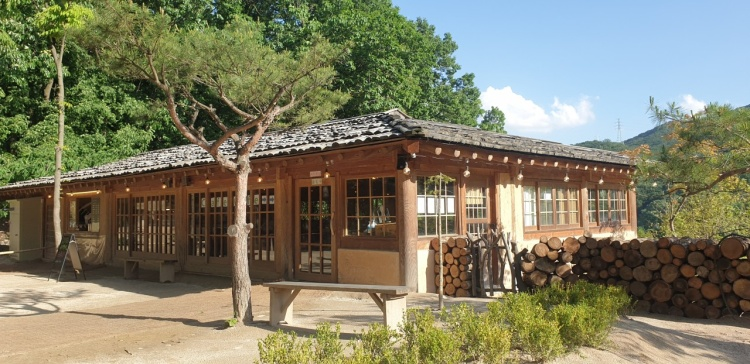
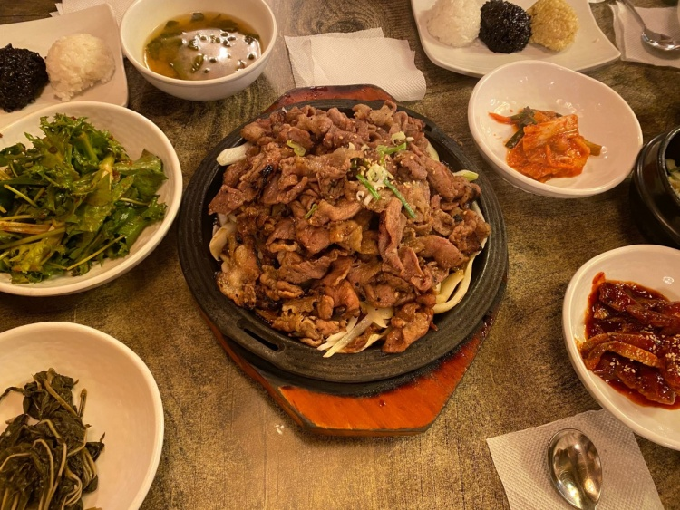
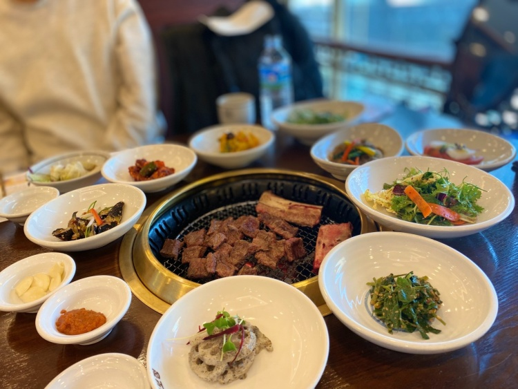
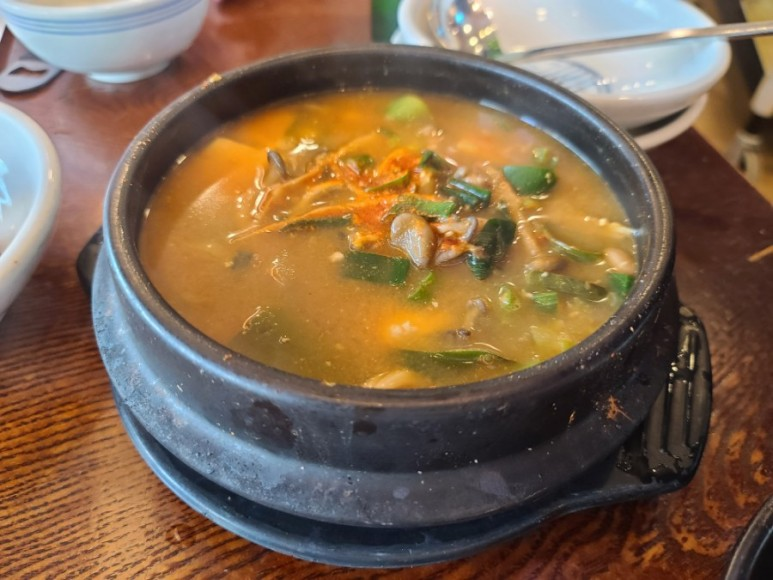
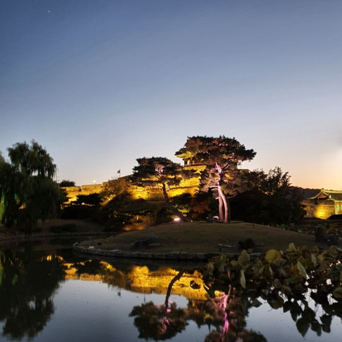
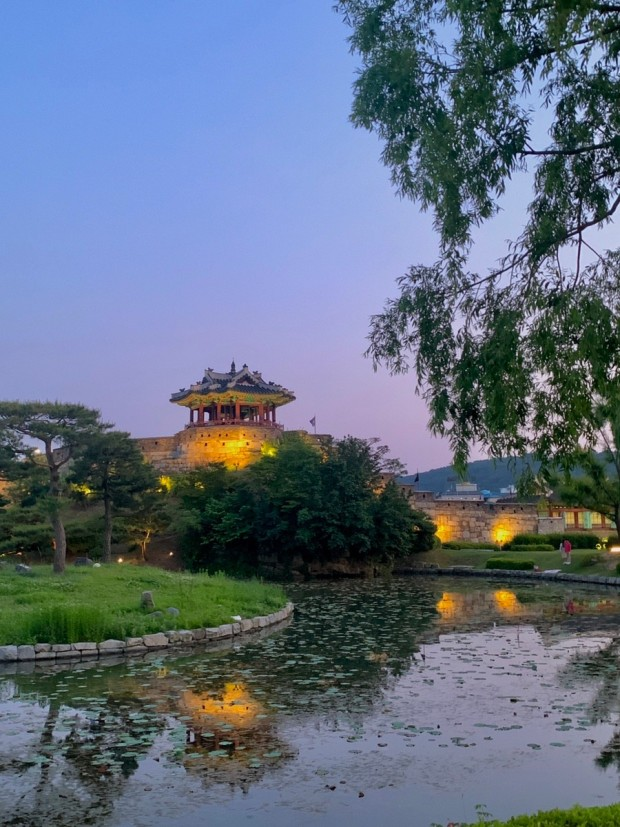
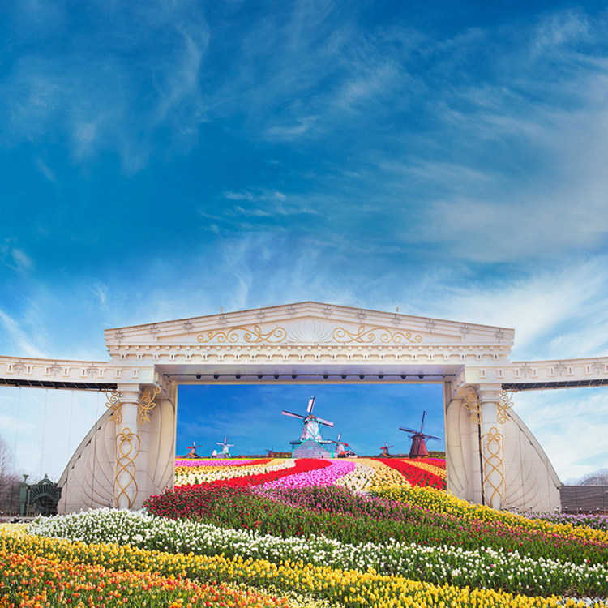
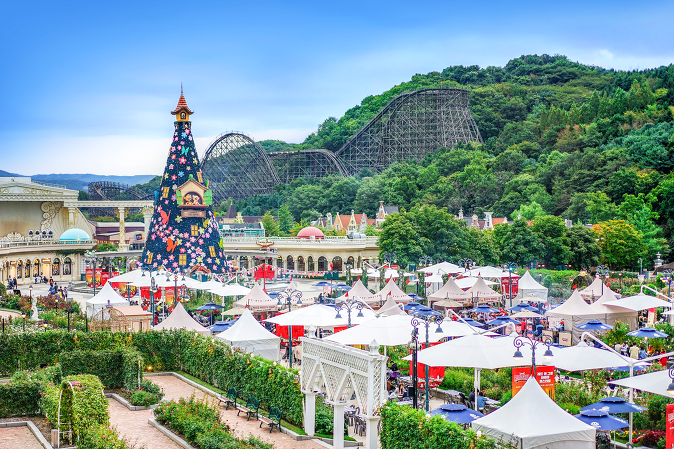
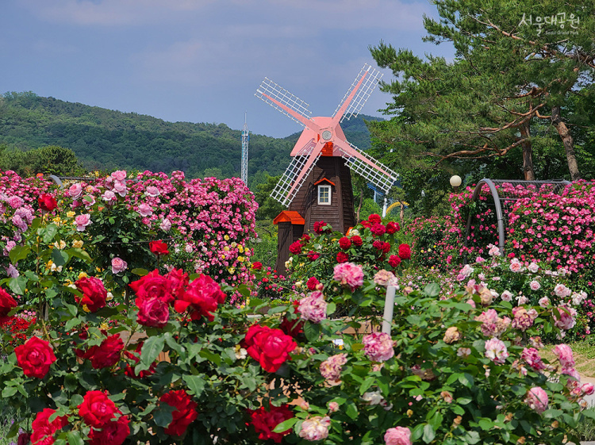
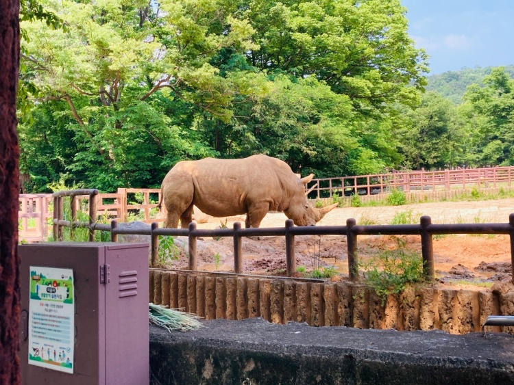

경기도는 접근성이 뛰어나 국제적으로 관광지 입니다. 주요도로와 철도를 이용해 쉽게 접근이 가능하고 인천항과 가까워 해외에서도 경기도와 바로 연결됩니다.
경제와 문화의 중심지로 세계적인 문화유산을 만나볼수 있습니다.
Food
목향원
 ⭐️⭐️⭐️⭐️
경기도 남양주시에 위치한 한식집입니다.
수요미식회, VJ특공대, 생생정보통 등 TV에 안나온 곳이 없을정도로 맛집입니다! 대표메뉴로 쌈밥 정식을 꼭 먹어보세요.
사진만 보더라도 군침이 싹 도네요! 벌써부터 달려가고싶은 마음입니다. 남양주를 갈일이 있다면 꼭 목향원을 찾아가세요~
메뉴는 쌈밥 하나입니다. 매일 10:30 ~ 24:00 연중무휴로 오픈합니다!
가보정
 ⭐️⭐️⭐️⭐️⭐️
경기도 수원시 팔달구에 위치한 가보정입니다. 특별한날 가족과 함께 한우를 먹으러 가보세요.
국내산 한우을 맛볼수있는 맛집입니다. 맛있는 한우와 배가 부르지않다면 육회도 같이 곁들여서 먹어보세요! 특별한 맛을 제공합니다
영업시간 안내
평일 11:30 - 21:30
토요일 11:00 - 22:00
View
포천 아트밸리


⭐️⭐️⭐️⭐️⭐️
경기도 포천시 신북면에 위치한 포천 아트밸리 입니다.
최근 전 세계적으로 도시재생사업의 일환을 눈으로 담을수 있는 곳 입니다. 방치되었던 폐채석장을 지역 주민과 관광객이 공연, 교육, 체험 등을 즐길 수 있도록 복합 문화공간으로 바꾸었습니다! 모노레일을 타고 천문 과학관에서 인공위성 관측에 관한 수업도 진행하고있습니다. 포천에서 아름다운 뷰를 감상해 보세요!
09:00 ~ 22:00 까지 개장합니다. 홈페이지에서 꼭 시간을 확인하세요.
방화수류정
 ⭐️⭐️⭐️⭐️
방화수류정은 경기도 수원 팔달구에 위치한 자연명소 입니다.
1794년 10월 19일에 완공되었습니다. 과거에 경관이 좋은 위치에 자리하여 단순히 군사시설로 활용하지 않고 경치를 조망하는 정자의 역할을 하였습니다.
근처에서 피크닉도 가능하기 때문에 돗자리를 챙겨가면 더욱편하게 야경을 관람할수 있습니다.
야경을 즐기고싶다면 방화 수류정을 추천합니다. 성벽이 밝게 빛나 아름다운 야경을 볼수 있습니다.
Landmark
에버랜드
 ⭐️⭐️⭐️⭐️⭐️
에버랜드는 1976년 경기도 용인시에 '용인자연농원' 이라는 이름으로 개장되었습니다. 1996년 3월 에버랜드로 새 이름을 달았고 국내 최고의 테마파크로 자리매김 하였습니다.
어렸을적 꼭 한번쯤 가본경험이 다들 있습니다. 남녀노소 할것없이 누구든지 재밌게 탈수있는 놀이기구 들이 준비되어있습니다.
에버랜드 운영시간
10:00 ~ 21:00
꼭 퍼레이드를 보세요! 다양한 공연이 준비되어있습니다.
서울대공원
 ⭐️⭐️⭐️⭐️⭐️
경기도 과천에 위치한 서울대공원 입니다. 1984년 개원하였으며 366종의 많은 동물들을 만나볼수있습니다!
어린아이와 함께 지낸다면 서울대공원을 가보세요. 여러 동물들과 장미꽃 정원 서울대공원을 한눈에 볼수있는 스카이리프트등 다양한 시설과 동물을 관람할수있습니다.
2021년 서울대공원 시간
매일 09:00 - 19:00
어린아이가 동물을 좋아한다면 더욱 추천합니다!